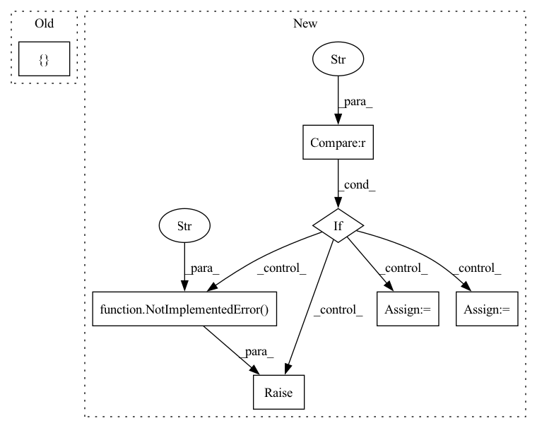

Pattern ID :33393
Before Change
def mask_image(x, config):
height, width, _ = config["image_shape"]
mask_all = []
for i in range(x.size(0)):
mask = Masks.get_ff_mask(height, width)
mask_all.append(mask)
mask = torch.from_numpy(np.asarray(mask_all)).unsqueeze(1).float()After Change
if config["mask_type"] == "hole":
result = x * (1. - mask)
elif config["mask_type"] == "mosaic" :
// TODO: Matching the mosaic patch size and the mask size
mosaic_unit_size = config["mosaic_unit_size"]
downsampled_image = F.interpolate(x, scale_factor=1. / mosaic_unit_size, mode="nearest")
upsampled_image = F.interpolate(downsampled_image, size=(height, width), mode="nearest")
result = upsampled_image * mask + x * (1. - mask)
else:
raise NotImplementedError("Not implemented mask type." )
return result, maskIn pattern: SUPERPATTERN
Frequency: 3
Non-data size: 7
Instances Fragment ID: 96110207
Project Name: sayednadim/global-and-local-attention-based-free-form-image-inpainting
Commit Name: aaa17ed332dc95db0f5900a43be179e26569b50c
Time: 2020-08-16
Author: smnadimuddin@gmail.com
File Name: model/mask.py
M Class Name: AnonimousClass
N Class Name: AnonimousClass
M Method Name: mask_image(2)
N Method Name: mask_image(2)
M Parent Class:
N Parent Class:
M File Name: model/mask.py
N File Name: model/mask.py
M Start Line: 40
M End Line: 49
N Start Line: 56
N End Line: 72
Before Change
center = np.array([right - (right - left) / 2.0, bottom - (bottom - top) / 2.0])
elif type == "bbox":
old_size = (right - left + bottom - top) / 2
center = np.array([ right - (right - left) / 2.0, bottom - (bottom - top) / 2.0 + old_size * 0.12After Change
center_x = right - (right - left) / 2.0
center_y = bottom - (bottom - top) / 2.0 + old_size * 0.12
// center = np.array([right - (right - left) / 2.0, bottom - (bottom - top) / 2.0 + old_size * 0.12])
elif type == "mediapipe" :
old_size = (right - left + bottom - top) / 2 * 1.1
center_x = right - (right - left) / 2.0
center_y = bottom - (bottom - top) / 2.0
// center = np.array([right - (right - left) / 2.0, bottom - (bottom - top) / 2.0])
else:
raise NotImplementedError(f" bbox2point not implemented for {type} " )
if isinstance(center_x, np.ndarray):
center = np.stack([center_x, center_y], axis=1)
else:
center = np.array([center_x, center_y]) Fragment ID: 96110204
Project Name: radekd91/emoca
Commit Name: 6b1c214e8dffa4c597f3ab915f7cfddb6d7abf2b
Time: 2023-02-13
Author: danekradek@gmail.com
File Name: gdl/datasets/ImageDatasetHelpers.py
M Class Name: AnonimousClass
N Class Name: AnonimousClass
M Method Name: bbox2point(5)
N Method Name: bbox2point(5)
M Parent Class:
N Parent Class:
M File Name: gdl/datasets/ImageDatasetHelpers.py
N File Name: gdl/datasets/ImageDatasetHelpers.py
M Start Line: 30
M End Line: 35
N Start Line: 30
N End Line: 49
Before Change
sb.dataio.dataset.add_dynamic_item(datasets, text_pipeline)
lab_enc_file = os.path.join(hparams["save_folder"], "label_encoder.txt")
special_labels = {
"bos_label": hparams["bos_index"],
"eos_label": hparams["eos_index"],
"blank_label": hparams["blank_index"],
}
label_encoder.load_or_create(
path=lab_enc_file,
from_didatasets=[train_data],
output_key="char_list",After Change
csv_path=hparams["train_csv"], replacements={"data_root": data_folder},
)
if hparams["sorting"] == "ascending" :
// we sort training data to speed up training and get better results.
train_data = train_data.filtered_sorted(sort_key="duration")
// when sorting do not shuffle in dataloader ! otherwise is pointless
hparams["train_dataloader_opts"]["shuffle"] = False
elif hparams["sorting"] == "descending":
train_data = train_data.filtered_sorted(
sort_key="duration", reverse=True
)
// when sorting do not shuffle in dataloader ! otherwise is pointless
hparams["train_dataloader_opts"]["shuffle"] = False
elif hparams["sorting"] == "random":
pass
else:
raise NotImplementedError(
"sorting must be random, ascending or descending"
)
valid_data = sb.dataio.dataset.DynamicItemDataset.from_csv(
csv_path=hparams["valid_csv"], replacements={"data_root": data_folder},
) Fragment ID: 96110178
Project Name: speechbrain/speechbrain
Commit Name: 33919bd5e34c83a7a6e5cb853b2a56a6de878faf
Time: 2022-08-28
Author: parcollet.titouan@gmail.com
File Name: recipes/LibriSpeech/ASR/CTC/train_sb_wav2vec.py
M Class Name: AnonimousClass
N Class Name: AnonimousClass
M Method Name: dataio_prepare(1)
N Method Name: dataio_prepare(1)
M Parent Class:
N Parent Class:
M File Name: recipes/LibriSpeech/ASR/CTC/train_sb_wav2vec.py
N File Name: recipes/LibriSpeech/ASR/CTC/train_sb_wav2vec.py
M Start Line: 216
M End Line: 308
N Start Line: 213
N End Line: 285